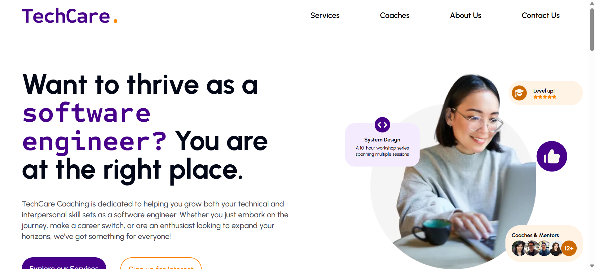

Company
RETAIL CIRCLE | London, UK
Position
Senior Product Owner
Duration
November 2023 – April 2025
Responsibilities
- Developed and executed a customised Salesforce CRM solution to optimise business processes, resulting in a 42% reduction in customer service time and contributing to a 25% increase in monthly recurring revenue (MRR) over two quarters.
- Implemented a new pricing strategy that increased average deal size by 15%, generating an additional £150k in revenue over the course of the year.
- Conducted in-depth gap analysis and identified underserved needs, leading to the successful launch of three new product lines that streamlined business processes within six months.
- Led cross-functional collaboration, working closely with technical teams to ensure seamless integration of API/SQL solutions between systems, significantly improving user experience.

Company
TECHCARE COACHING |Seattle, US
Position
Product Strategist
Duration
February 2023 – November 2023
Responsibilities
- Led a team of 8 to develop a website for a tech worker-focused career coaching service from concept to launch, ensuring alignment with customer needs and investor objectives.
- Took full ownership of product development and strategic direction. Acted as a key decision-maker in product strategy, guiding the team through early-stage growth and ensuring alignment with market trends and constant user feedback validation.
- Defined, prioritised, and managed the product backlog for the web application written in ReactJS, Python, Flask, and MySQL.
- Handled project management ceremonies, including product roadmap planning, establishing OKRs, and facilitating meetings between UI/UX, Tech, and Marketing teams.
Duration
September 2021 – August 2022
Responsibilities
- Leveraged data-driven insights to optimise the onboarding process of SB Analytic Dashboard, resulting in a 63% increase in session duration and a 28% increase in new subscriptions, contributing to a 12% boost in sales revenue within the same quarter.
- Optimised and designed product features by owning the product backlog, requirement gathering, and focus group interviews, leading to a 24% increase in Daily Active Users (DAUs) and a 53.6% improvement in customer satisfaction within the quarter.
- Collaborated cross-functionally with various departments to manage customer support tickets, ensuring client expectations and an exceptional customer experience.
Company
HIVETECH SOLUTIONS | Hanoi, VN
Position
Business Analyst Lead
Duration
August 2020 – September 2021
Responsibilities
- Led 3 cross-functional teams using Agile/Scrum from requirement gathering to execution, conducting gap analysis, and translating business needs into technical specs (SRS, BRD) with clear user stories and acceptance criteria, resulting in 0% scope creep and being recognised as “Best Development Team” for performance.
- Championed a well-organised product backlog, prioritised JIRA/Confluence tickets, and developed live prototypes (Figma) and business-process models (BPMN/UML), ensuring clear communication and keeping stakeholders informed.
Expertise
Years of Experience: 5+ years in UI/UX design and product development
Skills
- Proficient in creating wireframes, UI/UX prototypes (both lo-fi and hi-fi) using Figma.
- Developed live prototypes to validate business ideas before launch, ensuring alignment with user needs.
- Expert in designing and documenting BPMN/UML business flows for seamless communication with stakeholders.
- Collaborated with cross-functional teams to deliver user-centric designs that enhance customer satisfaction.